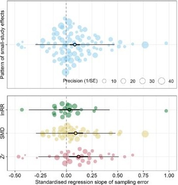
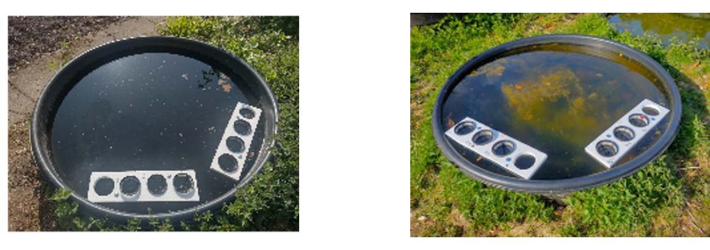
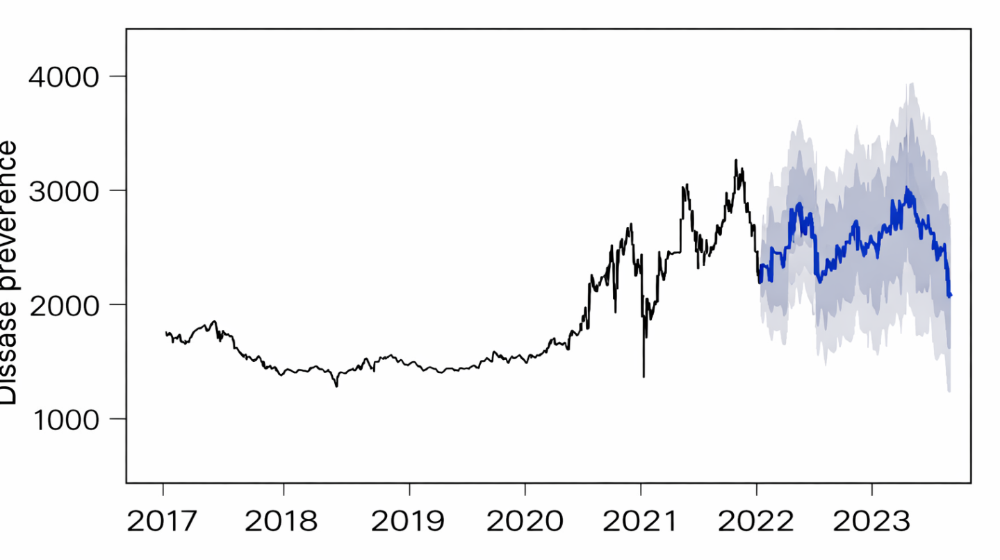
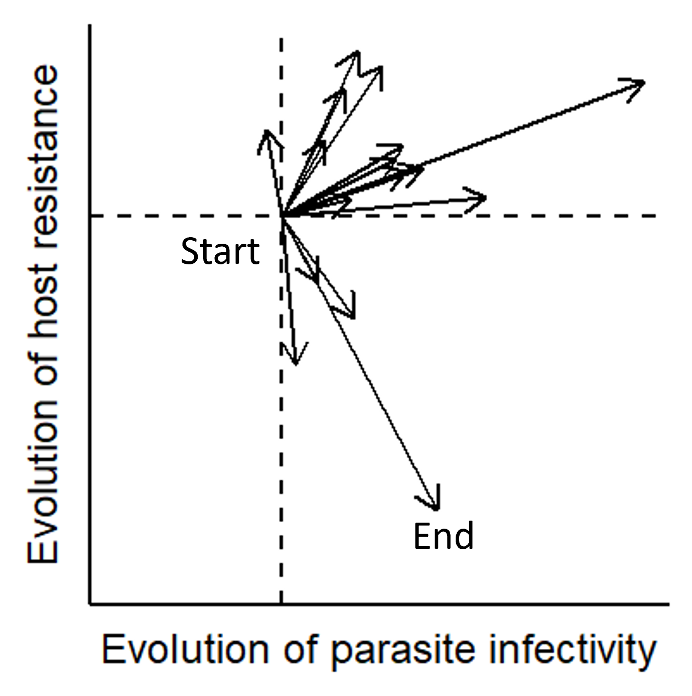
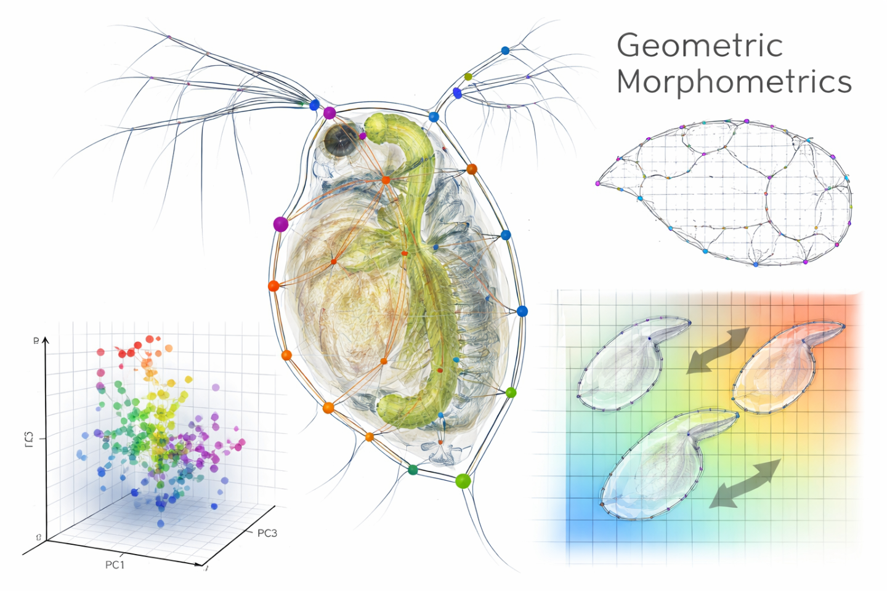
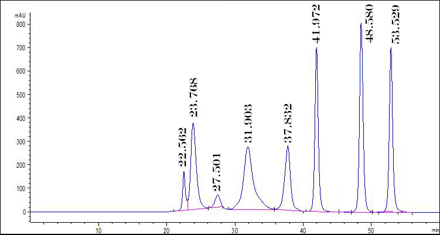

Developed transgenic Daphnia lines using CRISPR-Cas9 microinjection to investigate the genetic basis of predator-induced defenses. This work focused on targeted gene knockdown to identify key regulators of phenotypic plasticity.
Fig. Daphnia embryo microinjection.
Disease ecology — Meta-analysis
Conducted two meta-analyses examining drivers of epidemic dynamics across host-parasite systems. One assessed the relationship between epidemic size and host-parasite coevolution (11 studies), while the other evaluated how host genetic diversity influences epidemic outcomes (>40 studies).

Fig. Meta-analysis examples of orchard plots.
Local adaptation — Reciprocal transplanting
Tested for local adaptation using reciprocal host transplants in field cages within outdoor mesocosms. This approach allowed direct comparison of fitness across native and non-native environments.

Fig. Fieldwork transplanting across populations.
Disease forecasting — ARIMA modelling
Applied ARIMA time-series models to five years of epidemic data from 20 replicate populations. Leveraged environmental variation among replicates to improve forecasting accuracy by substituting spatial variation for limited temporal data.

Fig. Forecasting disease prevalence.
More Daphnia genetics — RT-qPCR
Quantified relative gene expression associated with the development of inducible defenses using RT-qPCR. This project linked transcriptional changes to phenotypic responses under predation risk.
Analyzed coevolutionary dynamics using multivariate phenotypic trajectory analysis. This approach captured the direction and magnitude of evolutionary change across host and parasite traits over time.

Fig. Host-parasite coevolutionary trajectories from 16 populations.
Daphnia genetics — Immunohistochemistry
Investigated spatial and temporal patterns of gene expression underlying predator-induced phenotypes using immunohistochemistry. This work provided tissue-level insight into the mechanisms of phenotypic plasticity.
Used geometric morphometric techniques to quantify shape changes in response to predation risk. This provided a high-resolution, holistic assessment of morphological plasticity.

Fig. Geometric morphometrics in D. pulex.
Plant inducible defences — UHPLC
Explored metabolomic changes associated with inducible disease resistance in tomatoes using UHPLC. Identified key chemical shifts linked to plant defensive responses.

Fig. Chromatograph with peaks correponding to chemical signatures.